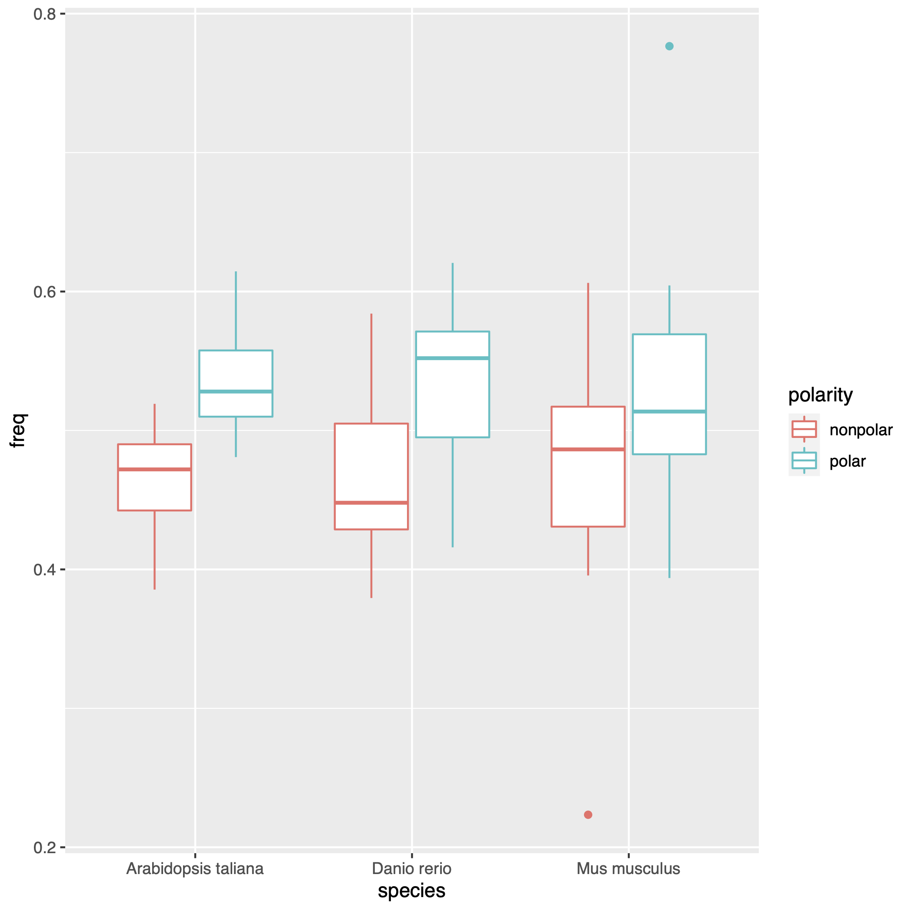

Preface
This workshop aims at introducing you to the world of workflow managers, in particular the workflow manager Nextflow. This workshop was written as a practical for the EMBL-EBI predoc course, 2022 cohort. I hope that you will find it useful, and in any case I would be happy to hear your feedback on it. You can contact me at saul@ebi.ac.uk.
The workshop is written with an increasing level of difficulty, so feel free to skip what is too easy for you or stop when things become too complex. The introduction section will help you set up all the software needed to follow this workshop. The basic features section will walk you through the fundamental concepts behind workflow managers in general and Nextflow in particular. The advanced features section will explore some more complex features of Nextflow. The [basic challange][Basic challange] and the [advanced challange][Advanced challange] sections contain challenges for you to solve, at different levels of complexity.
This workshop does not aim at being complete in describing Nextflow functionality. If this is what you are looking for the best place to explore is the Nextflow documentation. My objectives in writing this workshop is to present the features of Nextflow that I consider most important to know, and to present them in a way that shows you how you can use them in real-world scenarios. As for many topics in coding, there is not a single way for achieving the result that you want. Here I am showing you my way of writing Nextflow workflows. Many different approaches would be equally valid, and I encourage you to explore what works best for you and develop your own coding style.
1 Introduction
1.1 Prerequisites
Familiarity with the Linux shell, as well as basic programming constructs such as for/while loops and if/else statements is assumed. Familiarity with at least one scripting language such as R or Python will be beneficial. A basic knowledge of virtual environments and software containers would be helpful. Basic knowledge of git beneficial.
1.2 What is Nextflow?
Nextflow is an open-source workflow manager consisting of a domain specific language built as a superset of the Groovy programming language, which is itself a superset of Java. The purpose of Nextflow is to make it easier to coordinate the execution of complex data analysis pipelines, and to facilitate the execution of such pipelines in cloud environments and high-performance clusters.
In practice, Nextflow allows you to declare how the output of some processes in a pipeline are fed as the input of other processes, leading to the production of a final result. In addition, Nextflow allows the specification of software requirements for each process using conda environments, docker containers, and a variety of other solutions.
Once a pipeline has been written in Nextflow, it can be easily scaled from a local laptop to a high-performance cluster or cloud environment without any modification, with Nextflow taking care of environment-specific commands (for example, submitting appropriate jobs to a batch scheduler). Moreover, the pipeline execution is parallelised if the dependencies among different processes allow it. A motivation for using a workflow manager such as Nextflow is also to increase the reproducibility of your data analysis.
Finally, each processes in Nextflow is executed in its own unique directory, with automatic staging of the required inputs, so there is no need to think about filename collisions and file locations when developing your pipeline.
Nextflow is developed and maintained by Seqera Labs. The project was started in Cedric Notredame’s lab at the Centre for Genomic Regulation (CRG) in Barcelona, Spain. Nextflow was conceived with bioinformatics as its key use-case, but it is domain-agnostic and can be used for any data-intensive workflow.
1.3 Learning objectives
After following this tutorial, the learner will be autonomous in using nextflow for their own data analysis. They will understand fundamental Nextflow concepts such as processes, workflows, channels, they will be able to write a configuration file to alter the resources allocated for a processes and the software environment of execution, and they will be able to deploy a community-curated pipeline from nf-core.
1.4 Setup
Install mamba, a faster alternative to conda
curl -L -O "https://github.com/conda-forge/miniforge/releases/latest/download/Mambaforge-$(uname)-$(uname -m).sh"
bash Mambaforge-$(uname)-$(uname -m).shSetup the shell to use mamba
mamba initClose and re-open your shell. Then, create a mamba environment for installing Nextflow
mamba create -n nextflow nextflowNow activate the environment that you just created
mamba activate nextflowCreate an empty git repository in your GitHub account and clone it locally.
I will pretend that this repository is called my_repo in this workshop.
Don’t forget to replace this with the name of your actual repository.
cd my_repoYou can use a text editor of your choice to write Nextflow code. For example, you may want to use Atom. I recommend to add Nextflow language support to Atom by clicking here.
Create some essential files that we will be working on inside your new repository
touch main.nf
touch nextflow.config1.5 Getting started
1.5.1 General anatomy of a Nextflow workflow
A Nextflow workflow is usually represented by a git repository containing all the files describing the workflow logic, configurations, and dependencies.
Text files containing Nextflow code usually have the .nf extension (i.e. my_file.nf).
It does not really matter how you name your files, as long as they contain valid Nextflow code, but for consistency the best practice is to call the file describing the workflow as main.nf and place it at the root of your repository.
The main.nf file can access code from other Nextflow scripts, called sub-workflows, that can have arbitrary names.
The best practice is to place such additional Nextflow scripts under the folder workflows in the root of the repository.
So for example an additional Nextflow script could be named workflows/preprocessing.nf.
We will explore later the usage of sub-workflows, so don’t worry if you don’t understand their purpose yet.
The configurations for the pipeline need to be placed in a file called nextflow.config at the root of the repository.
Note that differently from what was said before regarding main.nf, this name is mandatory for Nextflow to properly recognise the file.
The nextflow.config file can contain for example resource requirements, execution, parameters, and metadata about your workflow.
We will explore more in depth the usage of configurations files in a later section.
Scripts (in any language, for example R or Python) that are used in the execution of specific processes in your pipeline should be placed in the folder bin.
Scripts placed here are automatically recognise by Nextflow during task execution without the need to specify their full path.
Additional files needed for your workflow, for example a table containing some metadata for your samples, are usually placed under the folder assets.
However this is not required and many workflows do not have an assets folder.
Inputs to the workflow are usually defined in a so-called “sample sheet” that should contain the (preferably) absolute file path to the input files end eventual sample-specific parameters for task execution.
Best practice is to have your sample sheet formatted as a csv file with an appropriate header.
Note that the sample sheet is not part of the pipeline itself.
The absolute path to the sample sheet is usually provided to Nextflow either as a command-line parameter or in the nextflow.config file.
In order to execute your workflow, you would run (do not do it now, we still need to write the workflow) nextflow run main.nf at the root of your repository if your workflow is in a file named main.nf.
This would prompt Nextflow to read the main.nf file and eventual sub-workflows, extract the workflow logic from it, load the configurations in nextflow.config, and coordinate the execution of the different steps in your pipeline to produce the final result.
1.5.2 Nextflow domain specific language versions
Before starting, it is important to know that Nextflow as it was initially developed is referred to as Domain Specific Language 1 (DSL1). A major change in the Nextflow syntax was done by its developers, and the new syntax is referred to as DSL 2. In this workshop we will be using exclusively the new DSL2 syntax.
For this reason, you need to add the following line at the top of your main.nf file:
nextflow.enable.dsl = 2So if in the future you will find yourself looking at a Nextflow workflow which is written very differently from what you are used to, it will probably be written according to DSL1 instead of DSL2.
1.5.3 Core concepts
A Nextflow workflow is defined by a set of processes, which execute a single task each, which are coordinate by one or more workflows.
So for example there may be a processes called align_fastq that takes in input a fastq file and a reference genome and uses the software bwa-mem2 to align it, producing an aligned cram file in output.
A processes defines as a minimum the command to be executed. Outputs are typically defined but may be omitted if the process is run for its side effects. Inputs are usually also defined but there may be processes that do not need any input and instead perform a static computation. Many additional parameters can be specified for a process, for example the software needed, or how much memory or time is required for its execution. We will explore processes and their definition more in detail in a later section.
If processes determine what is to be executed and how, workflows instead determine the logic of execution and how different processes communicate with each other.
So for example there may be a workflow called SNP_CALLING that takes a fastq file in input, uses the process align_fastq to obtain an aligned cram file, then gives that cram file in input to another process called gatk_call that uses it to create a vcf file containing genetic variants.
Processes communicate with each other using so-called “channels”, which are unidirectional First-In-First-Out (FIFO) queues.
This means that a channel is populated with a set of elements (for example, files) produced by a process in the order in which they are produced.
Then, these elements are consumed one by one by another process in the same order.
Several ways to manipulate, merge, and split channel exist, and we will explore them later.
So for example the workflow that I described above may define an input channel containing the fastq files in input, and a channel connecting the output of align_fastq to the input of gatk_call.
Note that channels are unidirectional: communication happens only in one direction, from outputs to inputs.
1.5.4 Your first workflow
Now that you know the basics of what a Nextflow workflow is, we will write a simple workflow and we will execute it.
First of all, open the file main.nf that you created before at the root of your repository in a text editor and add the following to it
// this is a comment
process say_hello {
// comments can be written anywhere
output:
path "hello_world.txt"
script:
"""
echo "This is the EBI predoc course" > hello_world.txt
"""
}
workflow {
say_hello()
say_hello.out.view()
}If you want to see how your main.nf should look like at this stage open this hidden section
Code
nextflow.enable.dsl = 2
// this is a comment
process say_hello {
// comments can be written anywhere
output:
path "hello_world.txt"
script:
"""
echo "This is the EBI predoc course" > hello_world.txt
"""
}
workflow {
say_hello()
say_hello.out.view()
}Now open the file nextflow.config and add the following line
// you can also put comments in nextflow.config
workDir = "../nextflow_workdir"Now run the workflow executing from the root of your repository the following
nextflow run main.nfYou should see a bunch of information about your workflow and finally you will see the name of the file we just created, hello_world.txt, appear on your terminal. Note that the full path to the file will be printed in your terminal, which will look something like /home/myname/nextflow_workdir/00/fjdanurew9gihwepw1455idusodhfweioru/hello_world.txt.
Let’s now examine the code step by step:
- In
nextflow.configwe declared our working directory to be../nextflow_workdirwith the keywordworkDir. The working directory is where Nextflow actually stores your files during intermediate processing. - Lines starting with
//define a comment in groovy, and they are ignored. - The keyword
processdefines a process, with the statement that follows defining the process name. Soprocess say_hellocreates a process namedsay_hello. - Curly braces enclose a block of code, so
process say_hello {<some code>}is understood by Nextflow as defining<some code>to belong to the process namedsay_hello. - The keyword
output:when used inside of a process defines the expected outputs that that process should produce. If the declared output is absent at the end of the process’ execution the execution fails. - Several types of outputs can be defined, and
pathis one of them. The keywordpathdefines what comes after it to be a file. - Output files are named in the output block after the
pathqualifier. They should be placed inside a string. Strings are enclosed in quotes in groovy ("this is a string"). - The
script:keyword defines the actual command to be executed in the process. The command should be provided as a string. Since commands can be long, here a multi-line string is used. In groovy, multi-line strings are enclosed in three quotes
"""
this is a multi-line string
it is very long
"""- What is declared in the
script:block is executed in the shell by default, so we should write bash code there- The command that we wrote,
echo "This is the EBI predoc course" > hello_world.txt, creates a file calledhello_world.txtcontaining the string"This is the EBI predoc course"
- The command that we wrote,
- The keyword
workflowdefines a workflow, that we left unnamed in this case. The last workflow to be written in yourmain.nffile is automatically executed by Nextflow.- The workflow that we defined executes the process
say_hello - The output of the process
say_hellois captured bysay_hello.out, which is a channel. In this case it will contain just the filehello_world.txt - The operator
view()just echoes to the terminal the content of the channel. In this case it printshello_world.txtto our shell.
- The workflow that we defined executes the process
So to put everything together, when you ran nextflow run main.nf Nextflow read the main.nf file, it found the last workflow, which we left unnamed, and executed it.
Some additional notes:
- It is possible to write
path("a_file.txt")orpath "a_file.txt", they are equivalent statements - There is no need to think about where we are creating our files, Nextflow under the hood creates a private directory for each execution and takes care of moving files around as needed by other processes
- It is common practice to chain different operators on a channel
- It is possible to chain operators on separate lines
- The following is equivalent to
say_hello.out.view()
say_hello.out .view() - The following is equivalent to
- Note that spaces and tab charachters are just for visual clarity and are not required
- Explore the working directory
../nextflow_workdir. It contains a directory with a strange alphanumeric name like00/fjdanurew9gihwepw1455idusodhfweioru(NOTE: yours will have a different name). One different directory like this is created by Nextflow for the execution of each task (a task is an instance of a process, a process is the definition itself, while a task is created each time that process is executed on different inputs).- Inside the directory with the strange name, you will see the file that we just created,
hello_world.txt - Read the content of the file with
cat hello_world.txt. You should seeThis is the EBI predoc coursein your terminal.
- Inside the directory with the strange name, you will see the file that we just created,
2 Basic features
2.1 Multiple processes and publication of workflow outputs
Let’s now step up a bit the complexity and write a workflow containing two processes that communicate with each other.
Add the following process to your main.nf file.
process duplicate_lines {
publishDir "../nextflow_output/duplicate_lines"
input:
path my_file
output:
path "${my_file.simpleName}.duplicated.txt"
script:
"""
cat $my_file $my_file > ${my_file.simpleName}.duplicated.txt
"""
}And modify your workflow block as follows
workflow {
say_hello()
duplicate_lines( say_hello.out )
}If you want to see how your main.nf should look like at this stage open this hidden section
Code
nextflow.enable.dsl = 2
// this is a comment
process say_hello {
// comments can be written anywhere
output:
path "hello_world.txt"
script:
"""
echo "This is the EBI predoc course" > hello_world.txt
"""
}
process duplicate_lines {
publishDir "../nextflow_output/duplicate_lines"
input:
path my_file
output:
path "${my_file.simpleName}.duplicated.txt"
script:
"""
cat $my_file $my_file > ${my_file.simpleName}.duplicated.txt
"""
}
workflow {
say_hello()
duplicate_lines( say_hello.out )
}Now run again the workflow with nextflow run main.nf.
This time your workflow will not print anything since we omitted the view() operator.
However, if you type in your terminal the following
cat ../nextflow_output/duplicate_lines/hello_world.duplicated.txtYou should see the following
This is the EBI predoc course
This is the EBI predoc courseSo as you see, the content of the hello_world.txt file that we created before has been duplicated so that it appears twice and it has been placed on a new file, ../nextflow_output/duplicate_lines/hello_world.duplicated.txt.
Let’s analyse what happened this time:
- We created another process called
duplicate_lineswhich duplicates a given file thanks to itsscriptcommandcat $my_file $my_file > ${my_file.simpleName}.duplicated.txt duplicate_linesdeclares aninput:block. The input block is similar to the output block that we saw before in that it can use thepathqualifier to declare the input to be a file. However, what comes afterpathdoes not need to be a real filename, it is just a variable name (note that it is not quoted). Nextflow replaces that variable with the real name of the file given in input.- In the script and output blocks we can refer to the inputs by specifying
$my_file. Note that we need to use the same name used in the input declaration.- It is possible to enclose the variable name in curly braces to demark it from other text. So
${my_file}is equivalent to$my_file. - We applied the operator
simpleNameto the variable$my_fileby writing${my_file.simpleName}. This removes the path and the extension frommy_file, so that we can use it to name our output file (if$my_filecontains the value"/some/path/hello_world.txt", then${my_file.simpleName}contains onlyhello_world).
- It is possible to enclose the variable name in curly braces to demark it from other text. So
- We used a new directive in the process
duplicate_lines, calledpublishDir. This specifies the folder where the output of the process should be placed at the end of the execution. This is usually done to put the final outputs of your workflow in a meaningful directory structure. In our case,publishDir "../nextflow_output/duplicate_lines"places${my_file.simpleName}.duplicated.txtin the folder../nextflow_output/duplicate_lines - In the workflow block we called the process
duplicate_lineswithsay_hello.outas an argument. So the output ofsay_hellois used as an input forduplicate_lines. Note that the number of arguments provided to a process must match the number of arguments declared in its input block.
2.2 Creating channels and specifying pipeline parameters
The workflow that we wrote works as expected but it is not very useful since we cannot specify dynamically its input files. We will now learn how to use pipeline parameters to specify an external input file for the whole workflow and how to use channel factories to feed it to our processes.
First create a text file called ../nextflow_inputs/a_file.txt containing the string "This is the file content"
mkdir ../nextflow_inputs
echo "This is the file content" > ../nextflow_inputs/a_file.txtModify the workflow as follows
workflow {
Channel.fromPath( params.input_file ).set{ input_ch }
duplicate_lines( input_ch )
}If you want to see how your main.nf should look like at this stage open this hidden section
Code
nextflow.enable.dsl = 2
// this is a comment
process say_hello {
// comments can be written anywhere
output:
path "hello_world.txt"
script:
"""
echo "This is the EBI predoc course" > hello_world.txt
"""
}
process duplicate_lines {
publishDir "../nextflow_output/duplicate_lines"
input:
path my_file
output:
path "${my_file.simpleName}.duplicated.txt"
script:
"""
cat $my_file $my_file > ${my_file.simpleName}.duplicated.txt
"""
}
workflow {
Channel.fromPath( params.input_file ).set{ input_ch }
duplicate_lines( input_ch )
}Now open the file nextflow.config and add the following
params {
input_file = "../nextflow_inputs/a_file.txt"
}If you want to see how your nextflow.config should look like at this stage open this hidden section
Code
// you can also put comments in nextflow.config
workDir = "../nextflow_workdir"
params {
input_file = "../nextflow_inputs/a_file.txt"
}Now run again the workflow with nextflow run main.nf.
This time if you examine the folder ../nextflow_output/duplicate_lines you will find a file called a_file.duplicated.txt. Let’s see it’s content.
cat ../nextflow_output/duplicate_lines/a_file.duplicated.txtThis should print
This is the file content
This is the file contentSo the content of the file that we created before, a_file.txt was duplicated and placed in the file a_file.duplicated.txt in the folder ../nextflow_output/duplicate_lines.
Let’s examine what happened:
- In
nextflow.config, we declared aparamsblock. Any variable written inside this block, likeinput_file = "../nextflow_inputs/a_file.txt", is accessible in the workflow by writingparams.<variable_name>, soparams.input_filein this case. - In
main.nf, we wroteChannel.fromPath( params.input_file ). This uses the channel factoryChannel.fromPathto create a new channel using the content ofparams.input_file. TheChannel.fromPathfactory interprets its argument to be the path to a file. - After
Channel.fromPath( params.input_file )we addedset{ input_ch }(note the curly braces: it is a closure, we will explore later what does it mean). This assigns to the newly created channel the nameinput_ch - We then used the channel
input_chas an input for the processduplicate_linesin the statementduplicate_lines( input_ch ). Since the channelinput_chcontains the variableparams.input_file, which we declared to contain the value../nextflow_inputs/a_file.txt, this file is given in input toduplicate_lines duplicate_linesperformed its function as before, putting its output in../nextflow_output/duplicate_lines
Instead than hard-coding parameters in nextflow.config, it is also possible to pass them on the command line. So for example we could have omitted the params block in nextflow.config and run
nextflow run main.nf --input_file ../nextflow_inputs/a_file.txtThis produces the same result. Note that pipeline parameters need to be specified with two prepending dashes (--my_parameter).
This differentiates them from command line options for Nextflow itself, such as -dry-run, which use a single dash.
2.3 Multiple input files
We are now able to process a single file with our pipeline, but what if we have many files that we need to process in the same way? One approach for this is to use a glob pattern as an input.
Let’s create a bunch of files to use in input
echo "This is content of file 1" > ../nextflow_inputs/set_of_files_1.txt
echo "This is content of file 2" > ../nextflow_inputs/set_of_files_2.txt
echo "This is content of file 3" > ../nextflow_inputs/set_of_files_3.txt
echo "This is content of file 4" > ../nextflow_inputs/set_of_files_4.txt
echo "This is content of file 5" > ../nextflow_inputs/set_of_files_5.txt
echo "This is content of file 6" > ../nextflow_inputs/set_of_files_6.txt
echo "This is content of file 7" > ../nextflow_inputs/set_of_files_7.txt
echo "This is content of file 8" > ../nextflow_inputs/set_of_files_8.txtNow we just need to modify input_file in nextflow.config
params {
input_file = "../nextflow_inputs/set_of_files_*.txt"
}If you want to see how your nextflow.config should look like at this stage open this hidden section
Code
// you can also put comments in nextflow.config
workDir = "../nextflow_workdir"
params {
input_file = "../nextflow_inputs/set_of_files_*.txt"
}Now run again the workflow with nextflow run main.nf.
This time if you examine the output folder with ls ../nextflow_output/duplicate_lines you will find a set of files
a_file.duplicated.txt
set_of_files_1.duplicated.txt
set_of_files_2.duplicated.txt
set_of_files_3.duplicated.txt
set_of_files_4.duplicated.txt
set_of_files_5.duplicated.txt
set_of_files_6.duplicated.txt
set_of_files_7.duplicated.txt
set_of_files_8.duplicated.txtLike before, each of them will contain the duplicated version of the original files.
Let’s examine what happened:
- We changed
params.input_chto contain a glob pattern. This is expanded by Nextflow to yield a list of matching files. - The matching files are fed one by one via the channel
input_chto the processduplicate_lines duplicate_linesoperates independently but in parallel on all the inputs, producing the output files. Each task is executed in its own private directory.
2.4 Using a sample sheet and value channels
Using glob patterns for specifying samples is useful and quick, but what if we want to specify input files that live in many different directories with very different names? And if we want some files to be processed in pairs with other specific files, or with specific parameters? For such use cases a sample sheet is the easiest solution and it is the recommended way to specify workflow inputs.
A sample sheet is just a csv file with one row per file to be processed, and with each column specifying either a file or a parameter.
Create a sample sheet called ../nextflow_inputs/samplesheet.csv by running the following command.
echo "sample,content" > ../nextflow_inputs/samplesheet.csv
echo "$(pwd)/../nextflow_inputs/set_of_files_1.txt,csv_content_1" >> ../nextflow_inputs/samplesheet.csv
echo "$(pwd)/../nextflow_inputs/set_of_files_2.txt,csv_content_2" >> ../nextflow_inputs/samplesheet.csv
echo "$(pwd)/../nextflow_inputs/set_of_files_3.txt,csv_content_3" >> ../nextflow_inputs/samplesheet.csv
echo "$(pwd)/../nextflow_inputs/set_of_files_4.txt,csv_content_4" >> ../nextflow_inputs/samplesheet.csv
echo "$(pwd)/../nextflow_inputs/set_of_files_5.txt,csv_content_5" >> ../nextflow_inputs/samplesheet.csv
echo "$(pwd)/../nextflow_inputs/set_of_files_6.txt,csv_content_6" >> ../nextflow_inputs/samplesheet.csv
echo "$(pwd)/../nextflow_inputs/set_of_files_7.txt,csv_content_7" >> ../nextflow_inputs/samplesheet.csv
echo "$(pwd)/../nextflow_inputs/set_of_files_8.txt,csv_content_8" >> ../nextflow_inputs/samplesheet.csvNow create a process called append_to_file
process append_to_file {
publishDir "../nextflow_output/append_to_file"
input:
path my_file
val my_val
output:
path "${my_file.simpleName}.appended.txt"
script:
"""
cat $my_file > ${my_file.simpleName}.appended.txt
echo "$my_val" >> ${my_file.simpleName}.appended.txt
"""
}And modify the workflow as follows
workflow {
Channel.fromPath( params.samplesheet )
.splitCsv( header: true )
.set{ input_ch }
input_ch.map{ it["sample"] }.set{ sample_ch }
input_ch.map{ it["content"] }.set{ content_ch }
duplicate_lines( sample_ch )
append_to_file( duplicate_lines.out, content_ch )
}If you want to see how your main.nf file should look like at this stage open this hidden section
Code
nextflow.enable.dsl = 2
// this is a comment
process say_hello {
// comments can be written anywhere
output:
path "hello_world.txt"
script:
"""
echo "This is the EBI predoc course" > hello_world.txt
"""
}
process duplicate_lines {
publishDir "../nextflow_output/duplicate_lines"
input:
path my_file
output:
path "${my_file.simpleName}.appended.txt"
script:
"""
cat $my_file $my_file > ${my_file.simpleName}.duplicated.txt
"""
}
process append_to_file {
publishDir "../nextflow_output/append_to_file"
input:
path my_file
val my_val
output:
path "${my_file.simpleName}.duplicated.txt"
script:
"""
cat $my_file > ${my_file.simpleName}.appended.txt
echo "$my_val" >> ${my_file.simpleName}.appended.txt
"""
}
workflow {
Channel.fromPath( params.samplesheet )
.splitCsv( header: true )
.set{ input_ch }
input_ch.map{ it["sample"] }.set{ sample_ch }
input_ch.map{ it["content"] }.set{ content_ch }
duplicate_lines( sample_ch )
append_to_file( duplicate_lines.out, content_ch )
}Now we need to modify the params block in your nextflow.config
params {
samplesheet = "../nextflow_inputs/samplesheet.csv"
}If you want to see how your nextflow.config should look like at this stage open this hidden section
Code
// you can also put comments in nextflow.config
workDir = "../nextflow_workdir"
params {
samplesheet = "../nextflow_inputs/samplesheet.csv"
}Now run again the workflow with nextflow run main.nf.
This time if you examine the output folder with ls ../nextflow_output/append_to_file you will find a set of files
set_of_files_1.append_to_file.txt
set_of_files_2.append_to_file.txt
set_of_files_3.append_to_file.txt
set_of_files_4.append_to_file.txt
set_of_files_5.append_to_file.txt
set_of_files_6.append_to_file.txt
set_of_files_7.append_to_file.txt
set_of_files_8.append_to_file.txtTaking as an example the first one, set_of_files_1.append_to_file.txt we would expect it to contain
This is content of file 1
This is content of file 1
csv_content_1However, most probably it will contain something like
This is content of file 1
This is content of file 1
csv_content_3So the first two lines have the correct number but the last line shows the wrong element! What’s more, the element shown on the last line can be different on each run (try!). We said before that channels are guaranteed to emit elements in the same order that they are received, so we should have the correct matches between files and values. What happened?
What happened is that while channels are indeed guaranteed to preserve order, processes and some operators are not because of their asynchronous and parallel nature. In our case, the process duplicate_lines receives the files in the correct order, but it is not guaranteed to emit them in the same order. This is because all the file are processed in parallel, and for example set_of_files_5.append_to_file.txt could be processed and emitted some milliseconds earlier that set_of_files_1.append_to_file.txt, and so the order would be altered.
A better approach when we want multiple channels to be used by one process with some predictable matching is to join channels using matching keys. We will explore it in a later section. For now, let’s examine what happened in this version of our workflow:
- We created the process
append_to_file, which takes in input a file (path my_file) and a value (val my_val). This process copies the content ofmy_fileto${my_file.simpleName}.append_to_file.txtand then appends to the newly created file the content ofmy_val - We defined the parameter
samplesheetinnextflow.config - We modified the workflow so that we use
params.samplesheetto create a channel withChannel.fromPath - We applied the operator
splitCsvto this channel containing the samplesheet, using the optionheader: true. This operator reads the file contained in the channel assuming it to be a csv file with an header line. Then it produces in output another channel containing, for each row in the samplesheet, a groovy map (what in Python would be called a dictionary). This map contains a key for each element in the csv header, and a value corresponding to the value of that column in the current line of the csv file. - We apply the
mapoperator (.map{ it["sample"] }) to the resulting channel- The map operator is follwed by a closure (
{ it["sample"] }) - You can think of a closure as an unnamed function (like a lambda function in Python)
- The
mapoperator calls this unnamed function for each element in the channel, and creates another channel containing the respective function outputs - Closure understand the implicit variable
it, which represents whatever imput is given to the function - If an explicit return statement is not present in the closure, the last evaluated expression is returned by the closure (
it["sample"]in this case)
- The map operator is follwed by a closure (
- Since
splitCsvcreated a dictionary for each item in the samplesheet,map{ it["sample"] }replaces that dictionary (itin the closure) with the content of the value contained in it under the key"sample" input_chis used again ininput_ch.map{ it["content"] }.set{ content_ch }to extract the value ofcontentfor each sample from the samplesheet- Channels can be used many times, and each time all the files contained in it are processed. So both
input_ch.map{ it["content"] }.set{ content_ch }andinput_ch.map{ it["sample"] }.set{ sample_ch }process every element ininput_ch
- Channels can be used many times, and each time all the files contained in it are processed. So both
- We created the channels
sample_chandcontent_chusing thesetoperator. They contain respectively the sample files and thecontentvalues related to them.- The order of processing in a channel is guaranteed, so we can be sure that each sample will be paired with the correct
contentvalue
- The order of processing in a channel is guaranteed, so we can be sure that each sample will be paired with the correct
- We fed
sample_chtoduplicate_lines - We fed the output of
duplicate_linestoappend_to_file, together with the values incontent_ch append_to_fileappended the value ofcontent_chto the output ofduplicate_lines, creating the final result
Note that we introduced a new qualifier: val. The val qualifier specifies a value, differently from the path qualifier that specifies a file. If I write val variable_name, then variable_name can contain something like a string or a number, depending on what is fed to the process input.
It is also possible to manually create value channels using the channel factory Channel.value.
Take as an example the following
workflow{
Channel.value(1, 2, 3).view()
}This would produce a channel containing in order the values 1, 2, and 3. These would then be printed one by one to the terminal by the view operator.
2.5 Software dependencies
We can do many things with just shell scripts, but for real-word scenarios we would probably need to use some additional library or tool. Software dependencies for a process can be specified in Nextflow in two main ways: using software containers or virtual environments.
A software container is like a shipping container: it is a monolithic block of code and data that contains everything needed to run a specific application, including the operating system (but not the kernel, the host kernel is used). The most popular container engine (the software that is used to actually run a container) is Docker. In high-performance clusters, for security reasons Docker is often discouraged or forbidden. A popular alternative container engine used in bioinformatics is Singularity. The good news is that Singularity is also able to run containers created with Docker, so we can consider them equivalent for our purpose.
For popular tools, a container has most probably already been created by someone and put in a public container registry like DockerHub. In this case, we can provide to Nextflow just a link to the container and it will do the rest. If instead we need to use a custom container, we would need to write an appropriate description file for it (called a “Dockerfile”), use it to actually build the container, and then upload the container to DockerHub. This last use-case will not be treated in this workshop, and we will limit ourselves to the use of pre-built containers.
On the other hand, virtual environments are a more lightweight and modifiable alternative to containers. They rely on the host operating system but they allow to define additional software. Nextflow is compatible with Conda environments, and can also use the faster Mamba implementation of Conda. It is worth noting that while Conda/Mamba are typically thought of as package managers for Python, they are actually able to install also R packages, the R interpreter itself, stand-alone tools, and even GPU drivers.
Differently from containers, environments do not need to be pre-built to be used by Nextflow. It is possible to just define the software that we need and Nextflow will take care to build an appropriate environment with it.
Let’s now write a workflow that makes use of virtual environments.
First download a csv file containing a set of countries, their population, and their area by running the following
wget https://raw.githubusercontent.com/saulpierotti-ebi/saulpierotti-ebi.github.io/main/assets/population_area_by_country.csvNow modify your main.nf file and make it look like this
nextflow.enable.dsl = 2
process calculate_population_density {
conda "python=3.10.6 pandas=1.5.0"
input:
path csv_file
output:
path "${csv_file.simpleName}.with_density.csv"
script:
"""
#!/usr/bin/env Python
import pandas
df = pandas.read_csv("${csv_file}")
df["density"] = df["population"] / df["area"]
df.to_csv("${csv_file.simpleName}.with_density.csv")
"""
}
process plot_population_by_area {
publishDir "../nextflow_output/plots"
conda "r-base=4.1.3 r-tidyverse=1.3.2"
input:
path csv_file
output:
path "${csv_file.simpleName}.pdf"
script:
"""
#!/usr/bin/env Rscript
library("tidyverse")
df <- read_csv("${csv_file}")
ggplot(df, aes(x=area, y=population, label=country, size=density)) +
geom_text()
ggsave("${csv_file.simpleName}.pdf")
"""
}
workflow {
input_ch = Channel.fromPath( params.input )
calculate_population_density( input_ch )
plot_population_by_area( calculate_population_density.out )
}Modify your nextflow.config by adding the following
conda {
// use the faster mamba solver instead of conda
useMamba = true
}If you want to see how your nextflow.config should look like at this stage open this hidden section
Code
// you can also put comments in nextflow.config
workDir = "../nextflow_workdir"
params {
samplesheet = "../nextflow_inputs/samplesheet.csv"
}
conda {
// use the faster mamba solver instead of conda
useMamba = true
}Now run the workflow as follows
nextflow run main.nf --input population_area_by_country.csvThis time the workflow will take significantly longer to run since Nextflow needs to create two mamba environments.
However, this will affect only the first run of the workflow, since once an environment is created it can be used multiple times.
Now open the file ../nextflow_output/plots/population_area_by_country.pdf.
It will contain a plot of the population of different countries versus their area, with the size proportional to their population density.
Let’s explore what happened:
- We specified to Nextflow to use mamba instead than conda when using the conda directive (with
conda{use.mamba = true}innextflow.config) - As before, we used a command-line flag to pass an input file to the workflow (
--input population_area_by_country.csv) - We used
population_area_by_country.csvas an input for the processcalculate_population_density, which uses Python code to calculate the population density of a country from its area and total population - The output of
calculate_population_densityis fed to the processplot_population_by_area, which uses R code to produce the plot
The conda directive used in these processes defines the software dependencies needed, in this case Python and pandas for the first process and R and tidyverse for the second process.
Software versions can be specified with an equal sign after the software name.
Packages are sourced from the repository Anaconda.
Another thing to note here: the script directive normally interprets the code written in it as bash code, but if an sh-bang (!#) is included in the first line of the script, then the software specified in the sh-bang is used to run the script section (so !#/usr/bin/env Python tells to Nextflow to interpret the script section as Python code).
A different approach to reach the same goal is to write a separate Python or R script, place it in the bin folder, and then execute it with a bash command in the script directive.
So for example you can create a file called bin/calculate_population_density.py with the following content
import pandas
import sys
df = pandas.read_csv(sys.argv[1])
df["density"] = df["population"] / df["area"]
df.to_csv(sys.argv[2])Make it executable with
chmod +x bin/calculate_population_density.pyAnd change the calculate_population_density process as follows
process calculate_population_density {
conda "python=3.10.6 pandas=1.5.0"
input:
path csv_file
output:
path "${csv_file.simpleName}.with_density.csv"
script:
"""
./calculate_population_density.py $csv_file ${csv_file.simpleName}.with_density.csv
"""
}Running the following will yield the same result as before
nextflow run main.nf --input population_area_by_country.csvIf we wanted to use containers instead than virtual environments for the process calculate_population_density to specify our software dependencies, we could have just replaced the line
conda "python=3.10.6 pandas=1.5.0"with the line
container "docker://amancevice/pandas"And then we would need to either set docker{enabled = true} or singularity{enabled = true} on our nextflow.config file, or we could specify the flag -with-docker or -with-singularity from the command line.
A similar approach would work also for the process plot_population_by_area, using for example the container docker:/rocker/tidyverse.
Note that containers in the format docker:/username/container are pulled by Nextflow from DockerHub.
They can be used either with Docker or Singularity.
2.6 Resource allocation
Resource allocation is very useful when our workflow is run on a high performance cluster or in the cloud. It is possible to specify the amount of RAM, the number of CPU cores, and the running time required by a process. These values are then used by Nextflow to reserve appropriate resources, for example to submit a job to the cluster with the desired requirements.
Since we do not have a cluster environment available for this workshop, we will not try to implement an actual workflow using resource requirements (we could specify them also for a local workflow, but we would not see any effect).
An example process specifying resource requirements looks like this
process calculate_population_density {
// this can be in GB, MB, KB, TB, ...
memory "2 GB"
// this can be in second(s), minute(s), hour(s), day(s)
// it is also possible to use abbreviations such as s, m, h, d
time "5 days"
// just an integer (note that this is not a string)
cpus 4
input:
path csv_file
output:
path "${csv_file.simpleName}.with_density.csv"
script:
"""
./calculate_population_density.py $csv_file ${csv_file.simpleName}.with_density.csv
"""
}2.7 The resume feature
One of the most powerful aspects of Nextflow is the resume feature.
This feature can be activated by adding the following to the nextflow.config file
resume = trueAlternatively, it is also possible to run the Nextflow command with the -resume flag.
We saw before that each task is executed by Nextflow in its own directory with a long alphanumeric name. This name is not random, but it is a 128-bit hash number. This number is calculated from the following values:
- Input files
- Command line string
- Container ID
- Conda environment
- Environment modules
- Any executed scripts in the bin directory
So, any time one of the following features of a process changes, the hash value and hence the working directory changes.
If a working directory with the same hash value as the one of the task to be executed is found by Nextflow, and this folder contains all the required outputs declared in the output block of the process, and it contains a file called .exitcode containing a value of zero (this is created automatically by Nextflow to save the exit code of a task execution), then the task execution is skipped and the output files present in the directory are returned as if they were produced by the current task.
This feature allows to resume the execution of a previous failed run of a workflow from the last successful task, potentially saving a lot of computing time. A more in-depth explanation of the resume feature is available here.
To test the resume feature by ourselves, lets modify our main.nf file as follows
nextflow.enable.dsl = 2
process dumb_process {
publishDir "../nextflow_output"
output:
path "out.txt"
script:
"""
sleep 120
echo "Success!" > out.txt
"""
}
workflow {
dumb_process()
}Now you can run the workflow with nextflow run main.nf.
Our workflow just runs the process dumb_process, which does not take any input and declares a single output file, out.txt.
This execution will take 2 minutes since the script block of the process dumb_process contains the command sleep 120, which just waits for 2 minutes (120 seconds), before writing the line “Success!” to the file out.txt.
After the execution is complete, we can see that the line “Success!” is present in the output file by running
cat ../nextflow_output/out.txtNow, to test the resume feature run again the workflow
nextflow run main.nf -resumeIn this case, the execution will be much quicker since process_dumb is not actually executed, but the cached results obtained before are returned.
2.8 nf-core pipelines
Many of the workflow that we need in our work as bioinformatics are always the same, mapping sequencing reads to a reference and then performing variant calling for example.
For such common use-cases, very efficient Nextflow pipelines are already available, so there is no need to re-invent the wheel.
Community-curated pipelines can be found on the nf-core repository.
So for example for mapping reads to a reference and then performing variant calling we would use the nf-core/sarek pipeline.
These pipelines follow a standardised format where inputs are declared by the user in a sample sheet.
You can read each pipeline’s documentation in nf-core to learn more about the parameters available and the expected sample sheet.
I cannot make you run an actual nf-core pipeline now since there is not a simple and self-contained pipeline that does not require additional data like sequencing files to be run. However, once you have some files to process and you wrote an appropriate sample sheet, running the pipeline is very easy, for example:
nextflow run nf-core/sarekNote that Nextflow is able to run workflows from GitHub, and nf-core/sarek in the command above is just a pointer to this GitHub repository.
Nextflow takes care of cloning the repository and running the main.nf file.
If you want to actually test running a pipeline written by someone else, run the following hello world pipeline:
nextflow run nextflow-io/helloThis will just print “Hello World” in different languages to the terminal. You can explore the code for this workflow here.
2.9 Labels
The label directive is used in Nextflow to tag processes to which we want to apply specific configurations.
So for example going back to the process calculate_population_density
process calculate_population_density {
conda "python=3.10.6 pandas=1.5.0"
input:
path csv_file
output:
path "${csv_file.simpleName}.with_density.csv"
script:
"""
./calculate_population_density.py $csv_file ${csv_file.simpleName}.with_density.csv
"""
}Instead than hard-coding the conda directive into the process definition, we could have done as follows
process calculate_population_density {
label "pandas"
input:
path csv_file
output:
path "${csv_file.simpleName}.with_density.csv"
script:
"""
./calculate_population_density.py $csv_file ${csv_file.simpleName}.with_density.csv
"""
}And then in the nextflow.config we could have written
withLabel:pandas {
conda = "python=3.10.6 pandas=1.5.0"
}This may seem of little benefit for a single process, but if we have many processes with similar requirements, using the label directive allows us to specify such requirements only once and in a central location.
So if for example we have several processes that need Python and pandas as software requirements, and we specified the requirements using the label directive, we can change the version of pandas used just by modifying what we wrote in the nextflow.config file, instead than having to modify the definition of many processes.
Note that the label directive can be used to specify many different configurations, not only software requirements.
For example, we could use it also for memory or time requirements.
3 Basic challenge
It’s now time to put into practice what you learned today! Try to solve the following challenge. The aim is to write a functioning workflow that takes in input the following sample sheet
filename,value,number_of_rows,number_of_columns
file1.txt,3,10,10
file2.txt,7,5,45
file3.txt,a_value,45,1
file4.txt,trweter,43,9
file5.txt,109,14,3
file6.txt,aaa,1,12
file7.txt,g,96,76
file8.txt,eew,11,11
file9.txt,1ww,21,34
file10.txt,45,8,2
file11.txt,jh,6,1
file12.txt,96,1,5For each file in the sample sheet (under the filename column), the workflow should create in output a file with such name and place it in the folder ../nextflow_output/challenge.
Each file should contain the content of the column value for that file.
This content should be repeated number_of_columns times in the same line, each instance separated by a comma.
The file should contain number_of_rows times the above mentioned row.
So at the end, each file should be essentially a csv file with number_of_rows rows and number_of_columns columns, without header, and with each cell containing value.
For example, ../nextflow_output/challenge/file1.txt should contain
3,3,3,3,3,3,3,3,3,3
3,3,3,3,3,3,3,3,3,3
3,3,3,3,3,3,3,3,3,3
3,3,3,3,3,3,3,3,3,3
3,3,3,3,3,3,3,3,3,3
3,3,3,3,3,3,3,3,3,3
3,3,3,3,3,3,3,3,3,3
3,3,3,3,3,3,3,3,3,3
3,3,3,3,3,3,3,3,3,3
3,3,3,3,3,3,3,3,3,3You can use as many or as few processes as you want to achieve this result. The challenge is possible using only the Nextflow features that we discussed, and a bit of bash or Python/R scripting.
You can find the solution to the challenge by disclosing the following block.
Click here to see the solution (main.nf file)
nextflow.enable.dsl = 2
process create_matrix {
conda "r-base r-tidyverse"
publishDir "../nextflow_output/challenge"
input:
tuple(
val(outname),
val(fill_value),
val(nrows),
val(ncols)
)
output:
path "$outname"
script:
"""
#!/usr/bin/env Rscript
library("tidyverse")
content <- rep("$fill_value", ${ncols}*${nrows})
mat <- matrix(content, ${nrows}, ${ncols})
df <- as.tibble(mat)
write_csv(df, "${outname}", col_names=FALSE)
"""
}
workflow {
Channel.fromPath( params.input )
.splitCsv(header: true)
.map{
[ it["filename"], it["value"], it["number_of_rows"], it["number_of_columns"] ]
}
.set{ input_ch }
create_matrix( input_ch )
}If the sample sheet is saved as ../nextflow_output/samplesheet.csv, the solution can be run with the following command
nextflow run main.nf --input ../nextflow_output/samplesheet.csv4 Advanced features
If you are reading the advanced section of this workshop I am assuming that you are already familiar with what are workflows, processes, and operators. I am also assuming that you know how a Nextflow workflow is structured and you understand the syntax and logic used in writing and configuring Nextflow pipelines. For this reason, you will find the following section to be a bit different from the ones that came before. I will not walk you through complete reproducible examples as I did until now, but I will present small snippets of code that show some specific functionality or practice that I deemed to be useful to know. You are supposed to try out by yourself these ideas, and see how they can be applied to your own use-case.
4.1 Process inputs
The input(s) used by a process is defined in its input: block, as we saw before.
The input(s) specified can be of several types.
We already saw in the basic section of this workshop the path and val input qualifiers.
We will see them more in details now, as well as explore some additional input qualifiers.
4.1.1 Input of type val
An input of type val just defines a value, that is made available to the process as a variable.
As an example, the following code writes the value “Good morning” to the file called my_file.txt.
process say_hello {
input:
val greeting_sentence
output:
path "my_file.txt"
script:
"""
echo $greeting_sentence > my_file.txt
"""
}
workflow {
Channel.value("Good morning").set{ my_ch }
say_hello( my_ch )
}4.1.2 Input of type path
An input of type path stages a file in the working directory of the process, and makes the filename available to the process under the variable declared.
As an example, the following code just reads the file /path/to/a/file.txt to the standard output.
process read_file {
input:
path my_file
script:
"""
cat $my_file
"""
}
workflow {
Channel.fromPath("/path/to/a/file.txt").set{ my_ch }
read_file( my_ch )
}4.1.3 Input of type tuple
An input of type tuple can be used when the channel given in input to the process emits lists of elements instead than single elements.
The elements contained in the list can be of any type, like for example val or path.
As an example, the following code appends the value “Good morning” to the file /path/to/a/file.txt.
process append_value_to_file {
input:
tuple(
path(my_file),
val(my_value)
)
script:
"""
echo $my_value >> $my_file
"""
}
workflow {
Channel.of( [ "Good morning", "/path/to/a/file.txt" ] ).set{ my_ch }
append_value_to_file( my_ch )
}4.2 Process outputs
Process outputs can have similar types to the ones used for process inputs.
So for example the output of a process can be a path variable (a file), a val variable (a groovy variable), or a tuple of such elements.
Other output types exist in Nextflow, but we will not treat them here.
Read here for more details.
See the following example:
process append_value_to_file {
input:
tuple(
path(my_file),
val(my_value)
)
output:
tuple(
path(my_file),
val(my_value)
)
script:
"""
echo $my_value >> $my_file
"""
}
workflow {
Channel.of( [ "Good morning", "/path/to/a/file.txt" ] ).set{ my_ch }
append_value_to_file( my_ch )
}In this example we see the same process as before, but this time we declared an output block.
The output is of type tuple, with two elements contained in it (one of type path and the other of type val).
After execution of the process append_value_to_file, the channel append_value_to_file.out will contain a list of two elements.
The first element will be the filename given in input, and the second element will be the value given in input.
Note that the file produced in output by the process will not be the same file given in input to it: it will have been modified in the script block by appending my_value to it.
4.3 The Groovy programming language
Here we will talk about some features of the Groovy programming language, on which Nextflow is based, that can be useful when writing workflows. If you want to test out some Groovy code interactively, head off to this website and paste the code snippets that we will introduce.
4.3.1 Closures
We already introduced closures in previous section, where we used them in conjunction with the map operator. In general, we can consider a closure as a unnamed function, defined as a statement enclosed in curly brackets. The following is a closure
{ it[1] }We can manually define the inputs and outputs of a closure. For example:
{
x, y ->
z = x + y
return z
}In the above defined example the closure expects two inputs, (x,y ->), some operation is performed on them (z = x + y), and a value is explicitly returned (return z).
The definition of inputs is optional, and indeed it is usually skipped.
If an input is not defined, the implicit variable it is used to refer to any input passed to the closure.
So we could write the following, assuming that a tuple of two elements is passed as an input to the closure
{
z = it[0] + it[1]
return z
}What’s more, it is possible to also omit the return statement from a closure.
In this case, the last evaluated expression is returned.
{ it[0] + it[1] }As shown in the previous example, closures can be split on multiple lines or they can be written on a single line. They can contain any valid Groovy code statement. For example:
{ if ( it < 1 ) {"small"} else { "big" } }4.3.2 Conditional statements
Conditional statements in Groovy can be written in several ways. The simplest approach is that of a classic if/else statement. This can be written, for example, as follows.
if ( x < 1 ) {
y = "small"
} else {
y = "big"
}A more compact syntax to achieve the same result takes advantage of the ternary operator
y = ( x < 1 ) ? "small" : "big"In case when the return value desired for the TRUE case is the statement itself, the Elvis operator can be used
y = my_list ?: "list is empty"In the latter case the variable y will contain the content of my_list if this is not empty, otherwise the string list is empty.
4.4 Channel factories
Besides the Channel.fromPath and Channel.value channel factories that we saw before, another useful Channel factory (especially for debugging purposes) is Channel.of.
Channel.of allows you tu put into a channel any Groovy data structure like lists, hash maps, and so on.
So takes as an example the following:
Channel.of(
["name": "EBI", "type": "institute", "location": "UK"],
["name": "GB", "type": "institute", "location": "Germany"],
)This will create a channel emitting two elements, each of them a Groovy map containing three elements.
What especially differentiates Channel.of from Channel.value is that the latter can contain only a single element.
4.5 Operators
In the basic section of this workshop, we introduced a few Nextflow operators: map, splitCsv, view.
Here we will more formally describe such operators and also look at additional operators that can be helpful for workflows with a more complex logic.Note that this is not an exhaustive list.
An exhaustive list can be found here.
4.5.1 The view operator
The view operator just prints to the terminal the content of the channel, one element per line.
Channel.of(1,2,3).view()Expected output:
1
2
34.5.2 The map operator
The map operator can be used to modify the content of a channel on the fly.
For example, it can be used to extract just some elements from a channel emitting lists.
Channel.of(
["name": "EBI", "type": "institute", "location": "UK"],
["name": "GB", "type": "institute", "location": "Germany"],
)
.map{ it["name"] }Expected output:
EBI
GB4.5.3 The set operator
The set operator creates assigns a name to the channel, given as a closure argument.
Channel.of(1, 2, 3).set{ my_ch }The above snippets creates a channel called my_ch with the values specified.
4.5.4 The splitCsv operator
The splitCsv operator is usually used to process a sample sheet.
It takes a path channel containing a csv file and emits each line of the csv as a list of values (or as a hash map if header: true is specified).
4.5.5 The flatten operator
The flatten operator will take all the elements in a channel and split them in single elements.
If the channel emits lists or nested lists, they are flattened and each element is emitted independently.
Channel.of(
[1, 2, 3],
["aa", "bb", "cc"]
)
.flatten()Expected output:
1
2
3
aa
bb
cc4.5.6 The collect operator
The collect operator is in a way performing the opposite operation of the flatten operator.
It takes all the elements in a channel and collects them in a single list, which is then emitted all at once.
Channel.of(
[1, 2, 3],
["aa", "bb", "cc"]
)
.collect()Expected output:
[1, 2, 3, aa, bb, cc]4.5.7 The filter operator
The filter operator filters the elements of a channel, emitting only the ones for which a condition is satisfied.
The condition is provided as a closure, with a boolean return value.
It is also possible to use a regular expression as a test, but we will not treat it here.
Channel.of(1, 2, 3, 4, 5)
.filter{ it > 3 }Expected output:
4
54.5.8 The first operator
The first operator just emits the first element of a channel.
Useful for testing the logic without running the full workflow.
Channel.of(1, 2, 3, 4, 5).first()Expected output:
14.5.9 The combine operator
The combine operator creates the Cartesian product of two channels (all the possible combinations of elements).
Channel.of(1,2,3).set{ ch_1 }
Channel.of("a", "b", "c").set{ ch_2 }
ch_1.combine(ch_2)Expected output:
[1, a]
[2, a]
[1, b]
[2, b]
[3, a]
[3, b]
[1, c]
[2, c]
[3, c]The combine operator can also be used to join elements that present a matching key from two channels.
This is achieved by specifying the by argument, with an integer specifying the position in the tuple to use as a matching key.
Channel.of(
["key1", 1],
["key2", 2],
["key3", 3],
).set{ ch_1 }
Channel.of(
["key3", "aa"],
["key1", "bb"],
["key2", "cc"],
).set{ ch_2 }
ch_1.combine(ch_2, by: 0)Expected output:
[key1, 1, bb]
[key3, 3, aa]
[key2, 2, cc]4.5.10 The groupTuple operator
The groupTuple operator collects the elements of a channel according to a matching key (whose position is specified with the by argument).
Channel.of(
["key1", 1],
["key2", 2],
["key1", 3],
["key2", 4],
["key1", 4],
)
.groupTuple(by: 0)Expected output:
[key1, [1, 3, 4]]
[key2, [2, 4]]4.6 Implicit variables
Implicit variables in Nextflow are a set of variables that are automatically defined by Nextflow for a process, globally, or in nextflow.config.
They can be accessed to modify the execution of processes and workflows according to their value.
Here just a few implicit variables are presented. For a full description visit here.
4.6.1 Script implicit variables (available in main.nf)
projectDir: the directory where themain.nfscript is locatedlaunchDir: the directory where Nextflow is executed fromparams: a dictionary containing parameters given via the command line or vianextflow.config(likeparams.inputthat we used in the basic section of this workshop)workDir: the working directory where the processes are executed
4.6.2 Configuration implicit variables (available in nextflow.config)
launchDir: the directory where Nextflow is executed fromprojectDir: the directory where themain.nfscript is located
4.6.3 Process implicit variables (defined within a process)
All of the process implicit variables are part of the task dictionary.
task.attempt: the number of times the task has been retried because of errors (when usingerrorStrategy "retry")task.hash: the hash values of the taks used to define its working directorytask.processes: the name of the processtask.name: the name of the task (composed of process name and inputs)task.exitStatus: the exit code of the task
4.7 Directives
Directives are options that can be applied to processes, affecting their execution in several ways.
We already saw the conda, container, cpu, time, and memory directives in the basic section of this workshop.
Here we will explore them more in detail, together with some additional directives that we did not encounter before.
This list is not exhaustive. For a complete description of Nextflow directives see here.
4.7.1 The conda directive
The conda directive is used to define a conda environment where the script block is run.
Even when using the faster mamba solver instead than conda, still the conda directive is used to specify the dependencies.
process {
conda "python pandas"
script:
"""
"""
}4.7.2 The container directive
The container directive defines the container used to run the script block.
This can be a Docker container, a Singularity container, or other kinds of containers (see here for more).
The container runtime to be used is usually defined in defined in the nextflow.config file.
The container can be local or hosted in a container registry like DockerHub.
process {
container "docker://saulpierottiebi/nvtop"
script:
"""
"""
}4.7.3 The cpus, memory, and time directives
The cpus, memory, and time directives are used to define the resources required by a process.
These are used for example when scheduling jobs with a batch scheduler in a cluster environment.
They are able to understand both strings (like "1 GB", or "2 days") and also values in the form 1.GB or 1.day.
The latter expression can also be used in closures to dynamically compute resource requirements (for example, memory { 2.GB * task.attempt }, we will see this better when talking of the errorStrategy directive).
process {
cpus 4
memory "1 GB"
time "2 days"
script:
"""
"""
}4.7.4 The label directive
The label directive is used to apply a common set of configurations to a set of processes.
This allows all the configurations to be defined centrally in nextflow.config, instead than being hard-coded in each process definition.
process do_something {
label "process_long"
script:
"""
"""
}
process do_something_else {
label "process_long"
script:
"""
"""
}Any process directive can be included in the withLabel code block in nextflow.config.
And in nextflow.config:
withLabel:process_long {
time = "3 days"
}4.7.5 The debug directive
The debug directive can be set to the boolean values true or false.
If set to true, the standard output of the process is shown on the command line during workflows execution.
As the name suggests, this is useful for debugging particular processes.
process do_something {
debug true
script:
"""
echo "This will be seen in the console"
"""
}4.7.6 The cache directive
The cache directive controls the behaviour of the Nextflow resume system.
If cache is set to false, the process is not cached and it is executed de novo each time, even if resume is set to true globally.
process do_something {
cache false
script:
"""
"""
}4.7.7 The errorStrategy directive
The errorStrategy directive controls what happens when the exit code of a process is not 0 (when the process terminates with an error).
Possible values are “terminate”, “retry”, “finish”, and “ignore”.
process do_something {
errorStrategy "ignore"
script:
"""
"""
}It is also possible to use a closure as an argument for the errorStrategy directive.
This allows to obtain a different behaviour with different exit codes.
Combining the “retry” errorStrategy with dynamic resource allocation we can obtain a process that when fails with certain exit codes (for example corresponding to insufficient memory) is retried with more resources.
process do_something {
errorStrategy { task.exitStatus == 130 ? "retry" : "terminate" }
memory { 10.GB * task.attempt }
script:
"""
"""
}Note that the exit codes are platform-dependent so are best defined on a platform dependent basis instead than being hard-coded.
4.7.8 The publishDir directive
The publishDir directive defines where to copy the outputs of a process following successful execution.
This is typically used with the final outputs of a workflow that are of interest for further analysis.
Using the publishDir directory, we can obtain all our outputs in a organised directory structure.
process do_something {
publishDir "/my/output/dir"
output:
path "my_file.txt"
script:
"""
touch my_file.txt
"""
}4.7.9 The executor and queue directives
The executor directive allows to specify the executor to use for a given process.
This can be “local” (the default) for local execution, “lsf” for using the batch scheduler IBM Spectrum LSF, or other values for several other batch schedulers.
It is even possible to use cloud infrastructures such as AWS, Microsoft Azure, or Google Cloud.
Using executors other than the “local” executor is essential for real-world workflows, where the computational resources required often vastly exceed those of a single laptop or even server.
You can read more about different executors for Nextflow here.
The queue directive allows you to define which of the batch scheduler queues to submit the process’ tasks to.
The value assigned to the queue directive should be a string matching the name of an existing queue.
process do_something {
executor "lsf"
queue "research"
script:
"""
"""
}4.7.10 The ext directive
The ext directive is used for advanced, custom configurations.
It allows you to define any key-value pair for the process.
The argument of the ext directive should be a closure assigning a variable.
The custom variables are made available like any other task implicit variable in the dictionary task.ext.
process do_something {
ext { my_var = "my_value" }
script:
"""
echo $task.ext.my_var
"""
}4.8 Advanced workflow configuration
We have already explored one of the main locations where Nextflow configurations can be set: the nextflow.config file.
Nextflow actually provides several systems for configuring a workflow, each suited to a specific use-case.
We will explore them in this section, together with configuration profiles.
4.8.1 Configuration files and command line parameters
Configuration files can be found in canonical locations, that Nextflow checks automatically. Alternatively, it is possible to manually load a configuration file in a custom location when running a workflow, or pass configuration parameters on the command line itself.
A rigid hierarchy of configurations applies, so that in case of conflicting configurations it is predictable which one will be actually used. The following configuration modes go from highest to lowest priority:
- Command line parameters (
--some_param) - Parameters provided in a file via the
-params-fileoption - Manually sourced configuration files via the
-coption - The
nextflow.configfile in the current directory - The
nextflow.configfile in the project directory - The
$HOME/.nextflow/configfile - Values defined in the pipeline script itself (i.e.
main.nf)
4.8.1.1 Command line parameters
Any parameter passed on the command line with a double dash (--some_param) is loaded in the params scope in Nextflow (so --some_param 4 will assigning a value of 4 to the variable params.some_param).
If a value is specified after the command line flag (for example --some_param 4), the value is assigned to the parameter.
If no value is specified (for example --some_param), the variable will store the boolean value true.
Since command line parameters have the highest priority in the configuration hierarchy, they are often used to override default parameter values set in nextflow.config.
It is important to differentiate workflow command line parameters that are prepended by a double dash --some_param from Nextflow runtime parameters which are prepended by a single dash (-resume).
Nextflow runtime parameters are used to modify the behaviour of Nextflow itself and do not affect the parameter space of the workflow.
4.8.1.2 The nextflow.config file
This file is automatically sourced by Nextflow and should be placed in the same directory as main.nf (another nextflow.config file can also be present in the launch directory, but this is rarely used in my experience).
It is typically used to set workflow-specific configurations that do not depend on the compute environment where the workflow is run, nor on the specific inputs used.
For example, the nextflow.config file can be used to set process software dependencies with a withLabel code block.
Another typically usage is that of setting default values for parameters that can be overridden on the command line (as part of a params block).
Profiles corresponding to different use-case scenarios are also often included.
4.8.1.3 The $HOME/.nextflow/config file
The $HOME/.nextflow/config file is typically used for compute environment-specific configurations, since it is available to all the workflows run on a given system.
So for example we may want our workflows to behave differently on our local laptop versus on a high performance cluster.
On my own $HOME/.nextflow/config on the EBI cluster, I define for example when different queues should be used, I set the executor to IBM Spectrum LSF, and I set the path for the input and output directories.
4.8.1.4 Custom configuration files
Custom configuration files can be provided via the -c config_file_path option or via the -params-file params_file_path option on the command line.
They have a similar use case to command-line parameters, but they are easier to use when several parameters have to be overridden at once.
4.8.2 Configuration profiles
Configuration profiles are set of configurations that have a collective name and can be optionally activated on the command line.
They can be written in any of the configuration files we explored before.
The following code defines a configuration profiles named cluster.
profiles {
cluster {
executor.name = "lsf"
executor.queueSize = 500
executor.submitRateLimit = "10/1sec"
executor.exitReadTimeout = "30 min"
}
}This profile can be activated by passing the flag -profile cluster on the command line.
Once activated, all the configurations contained in it are applied.
Several profiles can be defined in the profiles block.
If several profiles need to be activated at the same time, this can be done by concatenating them with commas after the -profile option (so if the profiles foo and bar need to be activated at once, I can write -profile foo,bar).
Profiles are particularly useful to set compute environments, software environments (i.e. use conda versus Docker versus Singularity), and particular running modes (think of a workflow that can perform several things, and the profile is used to choose what the workflow should do).
4.9 Sub-workflows
Sub-workflows can be used to modularise a workflow in logic steps. So for example a workflow that does germline variant calling on a set of sequencing files can be composed of a sub-workflow that maps the sequencing files to a reference and a sub-workflow that does the variant calling from the mapped sequencing files.
<processes defined here>
workflow MAP_TO_REF {
input:
fastq_ch
main:
run_bwamem2( fastq_ch )
mark_duplicates( run_bwamem2.out )
output:
mark_duplicates.out
}
workflow CALL_VARIANTS {
input:
mapped_crams_ch
main:
gatk_haplotypecaller( mapped_crams_ch )
genomics_db_import( gatk_haplotypecaller.out )
gatk_genotypegvcfs( genomics_db_import.out )
output:
gatk_genotypegvcfs.out
}
workflow {
MAP_TO_REF( params.input )
CALL_VARIANTS( MAP_TO_REF.out )
}Sub-workflows can have an input, a main,and a output block.
The input block defines the name of one or more channels that are passed as an input to the sub-workflows.
The output block can define a channel accessible from <WORKFLOW_NAME>.out after execution.
The main block defines the actual workflow logic in terms of processes to be run and channel manipulations.
It is also possible to write separate logical steps of the workflow in separate .nf files.
Such additional files can have any name and are usually put under the folder workflows in the project directory.
Workflows defined in such files can be accessed from main.nf using an include statement.
include { PRE_PROCESSING } from './workflows/pre_processing'
include { DO_SOME_WORK } from './workflows/important_script.nf'
workflow {
PRE_PROCESSING( params.input )
DO_SOME_WORK( PRE_PROCESSING.out )
}4.10 Nextflow Tower
Nextflow Tower is a centralised web interface that allows to monitor and launch your Nextflow workflows. It is possible to use the Nextflow Tower website (for free) or also on-premises solution are available for institutions (at a price).
Nextflow Tower communicates with the execution environment via SSH access (if the host is reachable via SSH), or via a “Tower agent” that is run on the execution environment itself. Nextflow Tower is particularly useful when you are running several pipelines at the same time in different environments to monitor failures and resource usage.
You can have a look at an example of the Nextflow Tower interface here below.

5 Advanced challenge
You are given a set of tsv files.
Each file contains a single column with the header “Entry” containing a set of UniProt protein IDs belonging to a single species (different for each file).
You are given a sample sheet containing a list of animal species and the path to the tsv file containing UniProt IDs for that species.
Finally, you are given a csv file containing all the natural amino acids found in proteins with their one-letter codes, three-letter codes, common names, and whether they have a polar or apolar side chain.
Your goal is to produce a box plot showing, for each species, the distribution of the fraction of polar versus apolar amino acids (across the proteins provided).
You should produce a plot like the one following and place it in the folder ../nextflow_output/challange (relative to your project directory).

Your input files will be created in the folder ../nextflow_inputs (after running the commands in the Setup section), and you can explore them manually to see their structure.
You may use any programming language for the task, but you should embed any computational step in a Nextflow process.
It is preferable if you split the work in as many independent processes as possible, instead than doing everything in a monolithic process.
Hint: you can retrieve protein sequences from UniProt programmatically by running the following (replacing <uniprot-id> with the actual UniProt ID of the protein you want to download)
wget https://rest.uniprot.org/uniprotkb/<uniprot-id>.fasta5.1 Setup
Create the required sample sheet file by running the following command from your project directory (make sure that the folder ../nextflow_inputs exists before running the command)
echo "filename,species" > ../nextflow_inputs/samplesheet.csv
echo "$(pwd)/../nextflow_inputs/arabidopsis.tsv,Arabidopsis taliana" >> ../nextflow_inputs/samplesheet.csv
echo "$(pwd)/../nextflow_inputs/mouse.tsv,Mus musculus" >> ../nextflow_inputs/samplesheet.csv
echo "$(pwd)/../nextflow_inputs/zebrafish.tsv,Danio rerio" >> ../nextflow_inputs/samplesheet.csvDownload the required data files by running the following command (as before, make sure that the folder ../nextflow_inputs exists before running the command)
wget -P ../nextflow_inputs https://raw.githubusercontent.com/saulpierotti-ebi/saulpierotti-ebi.github.io/main/assets/arabidopsis.tsv
wget -P ../nextflow_inputs https://raw.githubusercontent.com/saulpierotti-ebi/saulpierotti-ebi.github.io/main/assets/zebrafish.tsv
wget -P ../nextflow_inputs https://raw.githubusercontent.com/saulpierotti-ebi/saulpierotti-ebi.github.io/main/assets/mouse.tsv
wget -P ../nextflow_inputs https://raw.githubusercontent.com/saulpierotti-ebi/saulpierotti-ebi.github.io/main/assets/polar_apolar_table.csv5.2 Solution
You can see the solution to this challenge by expanding the following hidden sections.
Click here to see the solution (main.nf file)
nextflow.enable.dsl = 2
process get_sequences {
input:
tuple(
val(species),
path(id_list)
)
output:
tuple(
val(species),
path("*.fasta")
)
script:
"""
cat $id_list \
| tail -n +2 \
| xargs -I{} wget https://rest.uniprot.org/uniprotkb/{}.fasta
"""
}
process count_aa {
label "r_tidyverse"
input:
tuple(
val(protein),
val(species),
path(sequence)
)
output:
tuple(
val(protein),
val(species),
path("${sequence.simpleName}.aa_counts.csv")
)
script:
"""
#!/usr/bin/env Rscript
library("tidyverse")
df <- read_lines("${sequence}", skip=1) %>%
paste(collapse = '') %>%
strsplit(split = '') %>%
table() %>%
as_tibble() %>%
rename(residue = ".") %>%
mutate(
freq = n / sum(n),
protein = "${protein}",
species = "${species}"
)
write_csv(df, "${sequence.simpleName}.aa_counts.csv")
"""
}
process count_by_polarity {
label "r_tidyverse"
input:
tuple(
val(protein),
val(species),
path(aa_counts),
path(polar_apolar_table)
)
output:
tuple(
val(protein),
val(species),
path("${aa_counts.simpleName}.polarity_counts.csv")
)
script:
"""
#!/usr/bin/env Rscript
library("tidyverse")
pol_table <- read_csv("${polar_apolar_table}") %>%
summarise(
residue = single_letter_code,
polarity
)
df <- read_csv("${aa_counts}") %>%
left_join(pol_table) %>%
group_by(polarity, species, protein) %>%
summarise(freq = sum(freq))
write_csv(df, "${aa_counts.simpleName}.polarity_counts.csv")
"""
}
process aggregate_results {
label "r_tidyverse"
input:
path "*.csv"
output:
path "aggregated_polarity_counts.csv"
script:
"""
#!/usr/bin/env Rscript
library("tidyverse")
input_files <- list.files(pattern = "*.csv")
df <- map_dfr(input_files, read_csv)
write_csv(df, "aggregated_polarity_counts.csv")
"""
}
process make_plot {
label "r_tidyverse"
publishDir "../nextflow_output/challenge"
input:
path aggregated_polarity_counts
output:
path "final_plot.pdf"
script:
"""
#!/usr/bin/env Rscript
library("tidyverse")
df <- read_csv("${aggregated_polarity_counts}")
ggplot(df, aes(x=species, y=freq, color=polarity)) +
geom_boxplot()
ggsave("final_plot.pdf")
"""
}
workflow {
Channel.fromPath( params.samplesheet ).splitCsv( header: true ).set{ input_ch }
input_ch.map{ [ it["species"], it["filename"] ] }
.set{ get_sequences_in_ch }
get_sequences( get_sequences_in_ch )
get_sequences.out
.flatMap{
def species = it[0]
def all_sequences = it[1]
all_sequences.collect{ sequence -> [species, sequence] }
}
// add the sequence name as a value
.map{ [ it[1].simpleName ] + it }
.set{ count_aa_in_ch }
count_aa( count_aa_in_ch )
Channel.fromPath( params.polar_apolar_table ).set{ polar_apolar_table_ch }
count_aa.out.combine( polar_apolar_table_ch ).set{ count_by_polarity_in_ch }
count_by_polarity( count_by_polarity_in_ch )
aggregate_results( count_by_polarity.out.map{ it[2] }.collect() )
make_plot( aggregate_results.out )
}
Click here to see the solution (nextflow.config file)
// you can also put comments in nextflow.config
workDir = "../nextflow_workdir"
withLabel:r_tidyverse {
conda = "r tidyverse"
}
params {
samplesheet = "../nextflow_inputs/samplesheet.csv"
polar_apolar_table = "../nextflow_inputs/polar_apolar_table.csv"
}Additional resources
Nextflow documentation:
https://www.nextflow.io/docs/latest/index.html
Nextflow workshop from the Nextflow authors:
https://www.nextflow.io/blog/2022/learn-nextflow-in-2022.html
YouTube playlist:
https://www.youtube.com/playlist?list=PLPZ8WHdZGxmUv4W8ZRlmstkZwhb_fencI
Post on Medium on Nextflow from 23andMe:
https://medium.com/23andme-engineering/introduction-to-nextflow-4d0e3b6768d1
Nextflow course on SofwareCarpentries:
https://carpentries-incubator.github.io/workflows-nextflow/index.html
The story of Nextflow from its author:
Paper comparing Nextflow to Snakemake and other workflow managers:
https://journals.plos.org/ploscompbiol/article?id=10.1371/journal.pcbi.1008622
Other useful links:
https://www.nextflow.io/blog/2019/demystifying-nextflow-resume.html
Credits
The Favicon for this website is a derivative work of DNA_microarray icon by Guillaume Paumier, which is licensed under CC-BY SA 3.0
{kind=link}